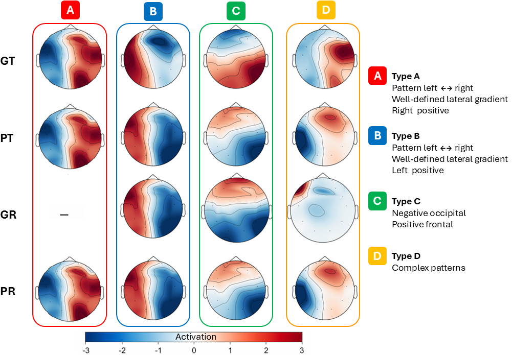
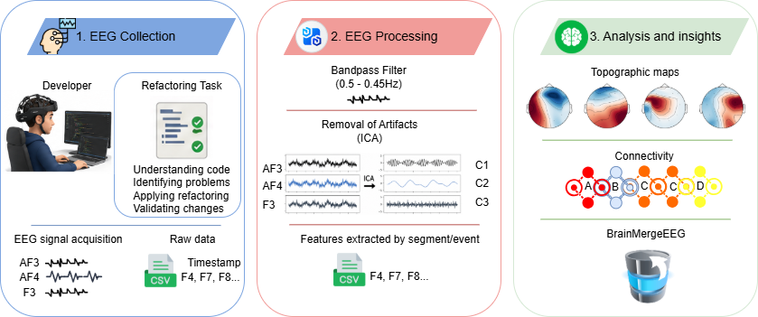
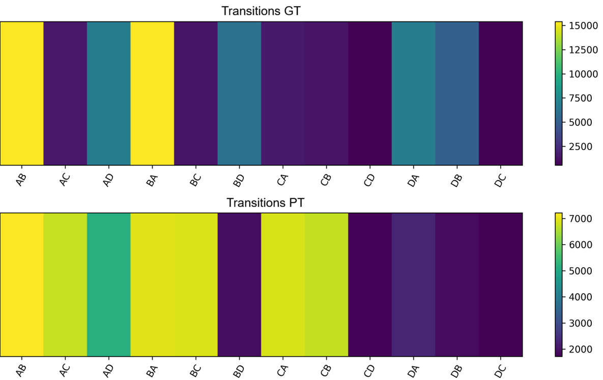
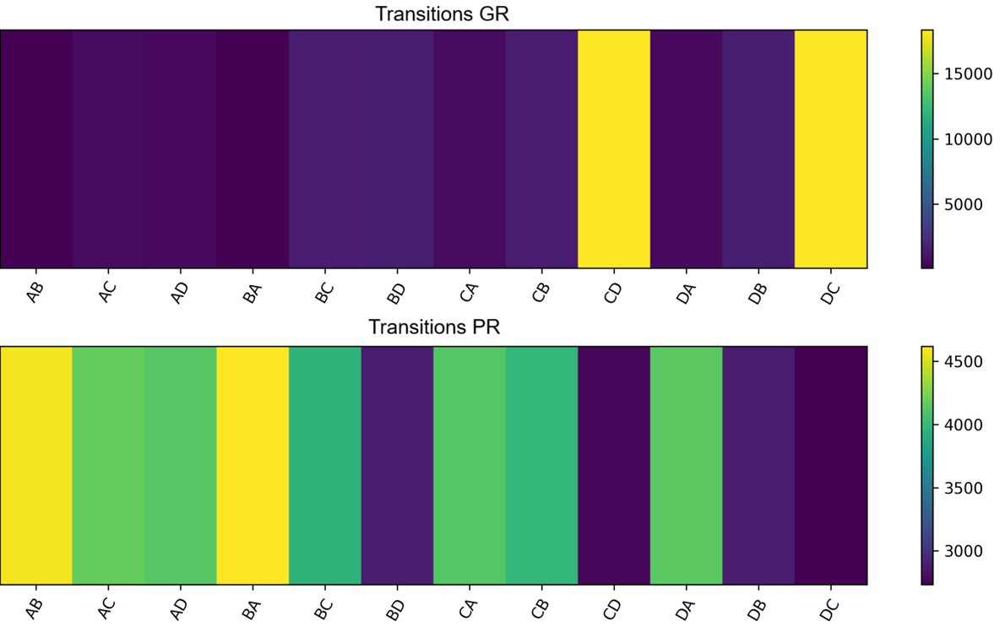

1Instituto Federal de Educação, Ciência e Tecnologia de Mato Grosso (IFMT)
2Universidade do Vale do Rio dos Sinos (UNISINOS)
Merging refactored code demands intense cognitive processing, visual search, and spatial mental alignment. This study introduces a neuroscientific evaluation using EEG Microstate Analysis to map sub-second cerebral network dynamics while software developers resolve merge tasks.
By tracking microstate transition syntax across canonical classes (A, B, C, D), we identify key neurophysiological predictors distinguishing high-performing developers from those experiencing cognitive overload or perceptual uncertainty.
In this study, we analyze EEG signals collected from 42 developers performing ten cognitive tasks involving source code refactoring and merging.
The main contributions of this work are threefold: (i) the proposal of an experimental pipeline that ensures reproducibility while aligning developers’ cognitive performance with the occurrence and transitions of EEG microstates, thereby providing a methodological basis for future research at the intersection of neural signals and software engineering; (ii) an analysis of EEG microstate dynamics, including duration, global field power (GFP), and transition patterns, considering different task types and performance levels; and (iii) the creation of a novel EEG dataset comprising recordings from 42 individuals during resting states and Java code refactoring tasks, addressing the lack of datasets focused on specific programming activities.
The first study to analyze the syntax of microstate transitions on a millisecond scale during source code refactoring and integration, relating cognitive load to developer performance during refactoring and merging tasks.
Previous studies have shown that merge failures are a recurring challenge in collaborative software development. Between 10% and 20% of merges may fail, with some projects reporting rates approaching 50% [brun2011proactive, kasi2013cassandra, zimmermann2007mining]. These failures can increase integration effort, particularly when developers need to identify and resolve merge conflicts [oliveira2023code].
Identification of task-oriented functional circuits (AB, BA, DA, DB) in good performers versus poor performers.
Duration (ms). Microstates A and B showed longer durations during tasks (GT and PT), whereas C and D were more stable during rest, particularly in GR.
Occurrence (Hz). Microstate A occurred more frequently in correct tasks (GT), while C and D predominated during rest (GR). Significant differences were observed across most microstates (p < 0.001).
Coverage (%). A and B predominated in correct tasks (GT), while C and D were more prevalent during rest (GR), suggesting modulation by task condition and performance.
GFP (μV). GFP showed fewer differences across groups than the temporal metrics, indicating lower sensitivity to task/rest and performance conditions.
Discovery that baseline rest syntax (CD/DC balance vs. BA/CA/CB/DA dispersion) acts as a neuromarker for wake-state instability and subsequent performance failure.
The results are positive, demonstrating that EEG microstate temporal characteristics differ between successful and unsuccessful code refactoring activities. Specifically, the temporal metrics Duration, Coverage, and Occurrence revealed consistent performance-related differences across the four canonical microstates. During the task condition, microstates A, B, and D were predominantly associated with successful refactoring, whereas microstate C was more frequently observed among participants who performed the task unsuccessfully. A similar trend was observed during the resting condition, where microstates A, C, and D were more prevalent in the poor-performing group, while microstate B remained associated with good performers. Among all evaluated measures, the temporal features exhibited the greatest sensitivity for distinguishing between performance groups, whereas the Global Field Potential (GFP) showed limited discriminative capability. These findings indicate that the temporal dynamics of EEG microstates provide meaningful neurophysiological markers of cognitive processes underlying code refactoring performance, supporting the conclusion that successful and unsuccessful refactoring activities are characterized by distinct microstate temporal patterns.
Release of a ~8.0 GB open-access dataset containing raw EEG recordings (42 subjects) and reproducible MNE/Pycrostates filtering pipelines on Zenodo.
The analysis of the temporal dynamics of microstate sequences transcends isolated static metrics—such as mean duration, frequency of occurrence, and percentage of time coverage—by focusing on the sequential structure and syntax governing sub-second switching between large-scale brain networks. With typical durations between 60 and 120 milliseconds, each microstate operates as a temporarily stable functional state; thus, the chronological succession and transition probabilities between canonical classes provide a millisecond-resolution window into the coordination, flexibility, and computational cost of cognitive processing. This syntactic perspective reveals how the developer's brain transitions between task-oriented configurations and baseline states, highlighting operational stability and neural efficiency under varying performance levels.
Figure \ref{fig:heatmap_TASK} presents the heatmap for good performers in task state (GT). In the GT, AB, BA, DA, and DB transitions predominate, with more intense coloring on the map. This pattern suggests greater direction and consistency in neural dynamics during the successful completion of the task, indicating that cognitive processing occurred more efficiently and with less need for global reconfiguration. The lower participation of transitions such as CD and DC reinforces the idea that, in high-performance situations, the brain tends to explore a more restricted set of functional trajectories between microstates, reflecting greater stability and operational predictability characteristic of neural networks in optimized operation.
Figure \ref{fig:heatmap_TASK} presents the heatmap for poor performers in task state (PT), revealing more distributed transitions with higher intensities in pairs such as BA, CB, and BC, indicating a greater need for dynamic adjustments during task processing. This increased structural reconfiguration suggests that the brain required more rapid changes between microstates to cope with cognitive overload or perceptual uncertainty, consistent with a less efficient decision-making scenario. The dispersion of activations also shows that, when performance fails, the neural system tends to follow less stable, more exploratory patterns, reflecting attempts at reorientation during the task.
Figure \ref{fig:heatmap_REST} presents the heatmap for the rest condition with correct performance (GR), where a strong concentration of CD and DC transitions stands out, represented in the heatmap by more intense coloring. This pattern indicates a more stable profile of neural functioning, aligned with evidence that, during rest, the brain tends to operate in states of lower variability and a greater predominance of specific microstates. The reduction of dispersed transitions suggests that, even at rest, the cognitive state was cohesive and organized, reflecting consistent and less oscillatory internal processing compared to the task state.
Figure \ref{fig:heatmap_REST} presents the heatmap for rest with incorrect performance (PR), showing a greater diversity of active transitions, particularly BA, CA, CB, and DA. This pattern indicates greater neural variability even at rest, suggesting that participants exhibited greater internal instability when subsequent behavioral performance was worse. The intensification of these transitions may reflect attentional fluctuations, less active regulation of resting networks, or greater dispersion of spontaneous cognitive activity, a behavior frequently associated with lower operational consistency of the neural network in reduced performance scenarios.

Figure 1. Standard spatial topographies corresponding to four canonical EEG microstates: Microstate A (temporal/auditory), Microstate B (occipital/visual), Microstate C (anterior Default Mode Network), and Microstate D (dorsal frontoparietal attention network).

Figure 2. Experimental workflow illustrating resting-state recording followed by refactored source code merge task sessions. Raw multi-channel EEG data undergo bandpass filtering (1–40 Hz), ICA artifact rejection, modified k-means clustering, and microstate sequence backfitting.

Figure 3. Transition probability heatmaps during task execution. GT (Good Performers): High concentration of AB, BA, DA, and DB transitions, demonstrating directed visual-attentional coupling. PT (Poor Performers): Increased dispersion across BA, CB, and BC transitions, reflecting cognitive overload and frequent DMN intrusions.

Figure 4. Baseline resting-state transition matrices prior to task execution. GR (Rest - Correct Outcome): Dominant CD and DC transitions, reflecting cohesive, well-organized baseline readiness. PR (Rest - Incorrect Outcome): Dispersed transitions (BA, CA, CB, DA), indicating wake-state instability prior to task engagement.
| Class | Topography | Functional Network | Cognitive Function |
|---|---|---|---|
| Microstate A | Right-Left Diagonal | Temporal / Auditory | Phonological & verbal processing |
| Microstate B | Left-Right Diagonal | Primary Visual Network | Visuospatial imagery & source code inspection |
| Microstate C | Anterior-Posterior | Anterior DMN | Task-negative, self-referential & mind-wandering |
| Microstate D | Frontal Central | Dorsal Attention (DAN / FPN) | Top-down executive control & goal orientation |
The open-access BrainMergeEEG dataset provides complete EEG signal recordings and reproducible filtering notebooks for software engineering and neurocognition researchers.
The acquisition of continuous multi-channel raw EEG signals was structured to capture brain network dynamics under rigorous controlled conditions. The experimental protocol follows a standardized 5-step workflow:
The EEG data collection environment was configured to ensure the proper operation of the EEG acquisition system and the experimental setup used during the study.
Configuration Guide: Raw EEG Data Collection Environment Configuration42 software developers (subjects S01 to S42) were recruited, verified for normal or corrected-to-normal vision, and briefed on the experiment. Informed consent was collected alongside a pre-test survey on Java programming and code refactoring experience.
Multi-channel EEG caps were positioned according to the International 10–20 System. Conductive gel was applied to lower electrode-skin impedance below the operational threshold (< 25 kΩ / < 5 kΩ). Signal quality was verified prior to continuous data recording.
Before starting the cognitive tasks, a continuous baseline resting-state session was recorded for each participant (eyes-open / eyes-closed). This baseline established individual pre-task neural readiness (classified later as GR or PR based on performance outcome).
Participants completed 10 controlled Java source code refactoring and integration tasks. Task triggers, onset timestamps, and completion events were synchronized with continuous multi-channel EEG recordings and behavioral log files.
Continuous voltage time-series data were exported into raw .csv files without applying destructive spatial or frequency transformations. Data were formatted per subject into directory structures (e.g., eeg_experiment/EEG/SXX/SXX-N-2024.csv) for open distribution on Zenodo.
To support open science and full empirical reproducibility, the BrainMergeEEG benchmark provides all raw multi-channel EEG recordings, task execution logs, and an end-to-end Python processing pipeline. Researchers can replicate the microstate spatial clustering, temporal feature extraction (Duration, Occurrence, Coverage, GFP), and syntax transition heatmaps across all 42 developer subjects.
The analysis pipeline relies on standard Python libraries for signal processing and neuroimaging analysis (MNE-Python, Pycrostates, NumPy, Pandas, SciPy). You can run the preprocessing notebook directly on Google Colab or in your local environment.
Open Colab Pipeline NotebookDownload the dataset archive EEG_Experiment.zip (2.5 GB compressed, ~8.0 GB uncompressed CSV files) from Zenodo and extract it into your local project root folder.
The reproduction workflow follows the exact pipeline illustrated in Figure 2 (images/Steps_processamento.drawio.png) and executed in 1_ProcessingFiltersEEG.ipynb:
Load multi-channel CSV files for participants S01 through S42. Apply bandpass filtering (1–40 Hz) and a notch filter at 60 Hz to remove environmental noise.
Decompose filtered signals using Independent Component Analysis (ICA) to reject ocular artifacts (eye blinks/movements) and muscular noise.
Extract Global Field Power (GFP) peaks and perform modified k-means spatial clustering to identify canonical microstate topographies A, B, C, and D (Figure 1).
Backfit microstate templates onto continuous EEG to compute temporal features (Duration, Coverage, Occurrence, GFP) and export transition heatmaps for GT, PT, GR, and PR (Figures 3 & 4).
# 1. Clone this repository git clone https://github.com/your-username/brainmerge-eeg.git cd brainmerge-eeg # 2. Install required neuroimaging dependencies pip install mne pycrostates numpy pandas scipy matplotlib jupyter # 3. Download and extract dataset from Zenodo (DOI: 10.5281/zenodo.17386294) wget https://zenodo.org/records/17386294/files/EEG_Experiment.zip unzip EEG_Experiment.zip -d eeg_experiment/ # 4. Execute the processing pipeline notebook jupyter nbconvert --to notebook --execute 1_ProcessingFiltersEEG.ipynb
If you build upon this work or use the dataset, please cite our benchmark paper and dataset:
@dataset{keemps_brainmergeeeg_2025,
author = {Keemps, Robson and Farias, Kleinner},
title = {BrainMergeEEG: An Open EEG Microstate Dataset for Studying Developers' Brain Network Dynamics},
publisher = {Zenodo},
year = {2025},
doi = {10.5281/zenodo.17386294},
url = {https://doi.org/10.5281/zenodo.17386294}
}
@article{shen2024conflictbench,
author = {Shen, Bowen and Meng, Na},
title = {ConflictBench: A benchmark to evaluate software merge tools},
journal = {Journal of Systems and Software},
volume = {214},
pages = {112084},
year = {2024},
doi = {10.1016/j.jss.2024.112084}
}